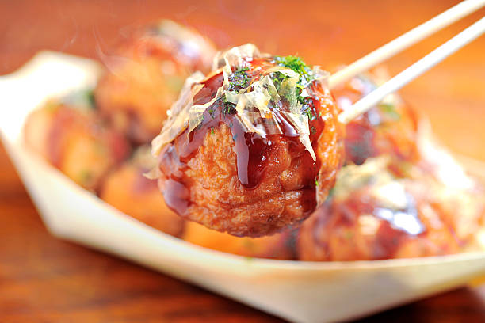

Shiba Recipes
Welcome to Shiba Recipes. We have all the best recipes from around the world.
Click here to sign up!
Home
About
Contact Us
Takoyaki

Ingredients
Octopus (500g)
Two large eggs
Regular flour
Pickled ginger
Green onions
Water (300ml)
Preparation
First, siv the flour into a large mixing bowl and add water and the eggs.
Keep mixing the mixture until it has no lumps and is fairly smooth.
Next prepare your octopus, green onions and pickled ginger by cutting them into small pieces.
Place into your takoyaki machine cooker and move using your skewer.
Wait until golden brown before serving and then enjoy!
If you liked this recipe, please look at the others below!
Tonkatsu
A delicious tonkatsu recipe. Perfect for fridays.
Karage
Crunchy and fresh karage
Gyoza
Fried gyoza recipe